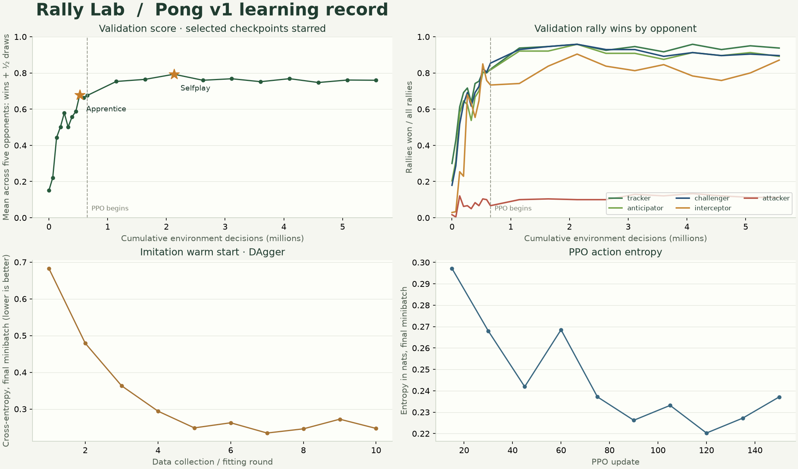

FROZEN RULES · PONG V1 · PYTORCH
Archived Pong v1 experiment. The current arena uses v2 rules.
From imitation
to self-play.
Two compact policies, one unchanged game. Apprentice learns a predictive attacker's decisions. Selfplay refines that starting policy through clipped PPO against built-in paddles, scripted references and historical versions of itself.
5.57MTraining environment decisions
4,803Parameters in each actor
94.3%Selfplay rally wins vs Challenger
6 → 64 → 64 → 3Tanh · 4,672 MACs per decision
The learning curves
Raw measurements from one training seed (7), with no smoothing. Validation uses 24 fixed seeds, all five serves and both sides: 240 rallies per opponent at every checkpoint. The vertical line marks the switch to PPO; PPO restarts from the best imitation checkpoint. Stars mark the exported policies.

The strongest PPO checkpoint was update 45 at 2,129,920 cumulative decisions. Later training did not reliably improve it. Checkpoint selection uses the mean of (rally wins + half rally draws) across five opponents. This is an evaluation statistic; the arena still awards one point per miss and zero for a timed-out rally.
Unseen test serves
These results use the exported ONNX files, deterministic argmax, seeds 2,000,000,000–2,000,000,099, every serve and both sides. Each row is 1,000 rallies / 200 five-rally matches. Test seeds were excluded from training and checkpoint selection.
Apprentice · imitation
| Opponent | Rally wins | Losses | Draws | Matches W / L / D | Median returns¹ |
|---|
| Tracker | 78.7% (787) | 213 | 0 | 182 / 18 / 0 | 1 |
| Anticipator | 77.9% (779) | 221 | 0 | 188 / 12 / 0 | 2 |
| Challenger | 78.0% (780) | 215 | 5 | 184 / 15 / 1 | 2 |
| Interceptor | 84.8% (848) | 141 | 11 | 199 / 1 / 0 | 3 |
| Attacker | 8.3% (83) | 908 | 9 | 0 / 200 / 0 | 2 |
Selfplay · PPO
| Opponent | Rally wins | Losses | Draws | Matches W / L / D | Median returns¹ |
|---|
| Tracker | 93.0% (930) | 38 | 32 | 199 / 0 / 1 | 2 |
| Anticipator | 93.1% (931) | 47 | 22 | 199 / 0 / 1 | 2 |
| Challenger | 94.3% (943) | 51 | 6 | 199 / 1 / 0 | 2 |
| Interceptor | 86.4% (864) | 23 | 113 | 200 / 0 / 0 | 4 |
| Attacker | 8.6% (86) | 886 | 28 | 0 / 200 / 0 | 3 |
¹ Median returns among rallies that ended in a point. Both models still lose heavily to the predictive attacker. This is a useful trained baseline, not evidence of optimal play or state-of-the-art benchmark performance.
How the weights were learned
10 DAgger rounds collect 655,360 decisions and fit a small actor to a scripted attacker's labels, including states visited by the learner. The best validation checkpoint becomes Apprentice. PPO then runs 150 updates × 256 environments × 128 steps, adding 4,915,200 decisions. Its opponent pool includes Tracker, Anticipator, Challenger, two scripts and up to five historical actors.
PPO uses generalized advantage estimation (γ=.99, λ=.95), a .2 clipped objective, clipped value loss, four optimization epochs, normalized advantages, gradient clipping and a decaying learning rate. Rewards are +1 for scoring, −1 for conceding and +.02 per return. A small decaying imitation loss helps retain the warm start. Training samples actions; the arena takes the first maximum. The separate critic and all training machinery are excluded from the ONNX files.
The training run took about 73 seconds locally, excluding environment setup and final evaluations. This is one seed on one machine, with no multi-seed confidence interval. Scripted opponents are stress tests, not optimal-play proofs. CPU float32 inference differences across runtimes can matter near action ties.
Methods: Proximal Policy Optimization, DAgger, and CleanRL's PPO implementation notes. The implementation here is purpose-built for the frozen v1 reference.
Reproduce and inspect
Start with training/README.md in the repository. The scripts cover simulator parity, data collection, training, ONNX export, held-out evaluation, plotting and packaging. Raw logs, configuration, selected weights and test results are retained in training/results/seed7/.
Verified: 883 exact scalar transitions and 11 boundary cases; 32,000 randomized batched transitions; 8,192 Torch/ONNX observations per exported actor with identical actions; eight complete ONNX matches reproduce in the live TypeScript engine (7,210 frames). The current v1 engine's source hash is unchanged.